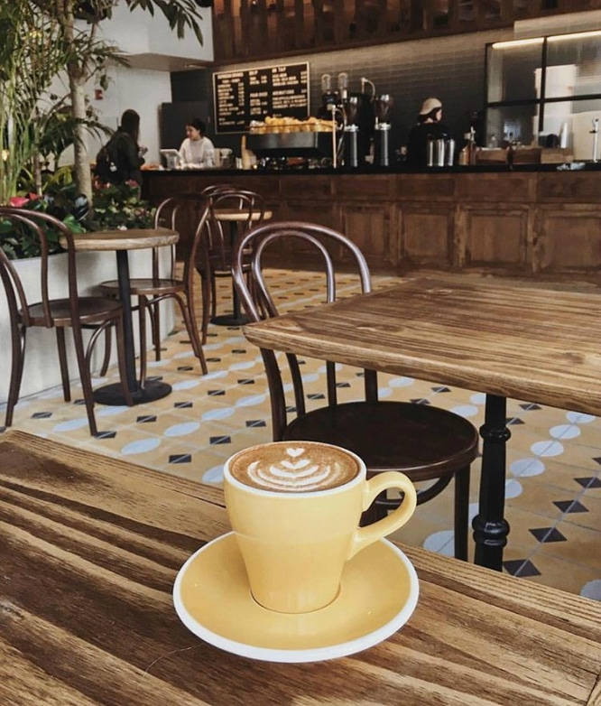

¿ De que se trata Coffe Plase ?
Coffe Plase es el lugar ideal para los amantes,expertos y fanaticos del mejor cafe, contamos con los mejores tipos de cafe latinoamericano.
Importamos nuestros granos desde las mejores plantaciones de Brasil, Colombia, africa, Etc.

Nuestro Cafe
El mundo del café es amplio, y hay muchas variedades entre las que elegir a la hora de preparar una taza perfecta. Sin embargo, algunas de las mejores opciones pueden sorprenderte. Por supuesto, en cuestión de gustos no todo el mundo siempre está de acuerdo y el café que te gusta a ti es posible que a otra persona no le haga tanta ilusión.
A continuacion les informamos las carateristicas mas importantes sobre nuetra variedad de nuestro cafe exportado:
- Café de Indonesia: Los granos de este café tienen un sabor único, cremoso y con un toque de amargor diferente. Esto hace que sea considerado uno de los mejores cafés del mercado y de los mejores que podemos ofrecerle a nuestros clientes
- Cafe de Brasil: Este cafe corresponde a la variedad arábica, por ello predomina el sabor dulzón, similar a los cafés procedentes de África, aunque sin la acidez característica de estos. El café de Brasil se caracteriza por su aroma suave y fino y cuerpo alto.
- Cafe Liberica: Procedente de Monrovia, la capital de Liberia. Es un grano con un sabor ahumado, fuerte y robusto.
- Cafe de Colombia: Decir Colombia es hablar de Cafe, los granos del café colombiano se caracterizan por sus toques afrutados y por tener un sabor único en función de la zona concreta donde se cultive.
- Cafe de Etiopia: Uno de nuestros favoritos y el mas vendido de nuestar variedad, conocido por ser un tipo de café muy delicado, de mediana acidez, algo afrutado y con ciertas notas cítricas. Su aroma es intenso, destaca por su bajo contenido en cafeína, es muy apreciado por su profundo aroma a especias. El grano es relativamente pequeño y grisáceo cuando está sin tostar.